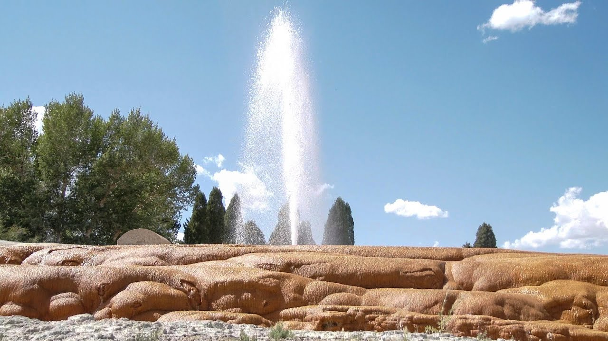

Soda-Springs, Idaho
Weather Summary
Currently:
Temp:
Wind Chill:
Humidty:
Wind Speed:
Five Days Forcast
|
|
|
|
|
|
Latest News
Curiosity on the Oregon Trail

Located along a shortcut on the Oregon-California Trail off of the main route to Fort Hall, Idaho is Soda Springs. These natural bubbling pools of carbonated water, caused by ancient volcanic activity, were first called “Beer Springs”. Visited by local Indians, fur traders, and trappers prior to the days of the Oregon Trail emigrations, the springs were rightfully considered to be one of the marvels of the overland trails. At the time that pioneers were headed west for California and Oregon, there was an abundance of springs and water in the area and the area became known as the “Oregon Trail Oasis.” Emigrants frequently took advantage of the hot water to wash clothes, bathing, and medicinal purposes, often noting the picturesque scenery of the area and the smell that came from the springs. On July 24, 1838, Sarah White Smith stated: “Traveled… along the bank of the Bear River & are encamped at Soda Springs. This is indeed a curiosity. The water tastes like soda water, especially artificially prepared. The water is bubbling and foaming like boiling water. I drank of it… We find it excellent for baking bread, no preparation of water is necessary. Take it from the fountain & the bread is as light as any prepared with yeast.” The development of the town of Soda Springs and the building of Alexander Reservoir has destroyed or covered many of these historic springs; however, Steamboat Spring, Wagonbox Grave, Hooper Spring, Octagon Spring, and two short traces of ruts can still be seen in the area. In Hooper Springs Park, visitors can sample the carbonated water just as westward-bound travelers did some 160 years ago. Soda Springs is also the home of the world’s largest man-made geyser. The geyser was created in 1937 when engineers were attempting to find a hot water source for a swimming pool. On November 30, 1937, the drill went down 315 feet and unleashed the geyser. The extreme pressure. caused by carbon dioxide gas mixing with water in an underground chamber, caused water to shoot 100 feet into the sky. It is now capped and controlled by a timer and erupts every hour on the hour. It is the only captive geyser in the world.
Contact Information
💻 Nouveauinfo.com
📞 xxxxxxx
📭 P.O box xxx
.png?v=1601997971996)
.png?v=1601997921596)
.png?v=1601999397723)